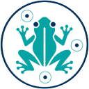

МикроТест Вижн Петри диско-диффузионный метод
?
Загрузите фото чашек Петри – программа найдёт диски и измерит зоны подавления. Неверную границу поправьте вручную.
Загрузить фото
Открыть проект
Пример
Скачать проект
Выбрать и удалить…
Измерения
Отправить таблицу
Поделиться Excel
Скачать Excel
Копировать таблицу
Найти заново
S, если зона ≥
R, если зона <
между – I. Зона округляется до целого мм.
Свои пороги S / I / R
Обычно пороги подставляются сами: выберите микроорганизм в паспорте чашки (таблицы «Российских рекомендаций», МАКМАХ 2024-02, по EUCAST; зона округляется до 1 мм). Здесь – свои пороги для препаратов, которых нет в таблице, или если нужно другое значение; свои пороги важнее табличных. Зона ≥ «S, если» – S , чувствительный (стандартная доза); между порогами – I , чувствительный при повышенной экспозиции; зона < «R, если» – R , резистентный. Если пороги равны, категории I нет. Название препарата – как в колонке «Препарат».
Добавить препарат
Добавить препараты из чашек
ампициллин амоксициллин/клавуланат
азитромицин цефтазидим
ципрофлоксацин гентамицин
цефтриаксон цефотаксим
хлорамфеникол эритромицин
цефокситин имипенем
левофлоксацин линезолид
меропенем оксациллин
пенициллин ко-тримоксазол
тетрациклин ванкомицин
амикацин тобрамицин
пиперациллин-тазобактам цефепим
эртапенем азтреонам
моксифлоксацин офлоксацин
клиндамицин тейкопланин
рифампицин фузидовая кислота
тигециклин
ампициллин бензилпенициллин
оксациллин ципрофлоксацин
гентамицин ванкомицин
эритромицин тетрациклин
Обрезка фото
Тяните углы или стороны рамки, чтобы оставить только чашку. Внутри рамки – сдвиг. Лишнее затемнено.
Обрезать
Без обрезки
Без обрезки для всех
Не добавлять это фото
Редактор снимка
Яркость
Контраст
Насыщенность
Обрезка: потяните по снимку новую рамку, углы и стороны – изменить, внутри – сдвинуть. Двойной клик по ползунку – вернуть 0.
Сохранить PNG
Скопировать
Сбросить всё
Отмена
нажмите, чтобы закрыть
Препарат
×
Готово
Какие чашки удалить?
×
Отметить все
Снять все
Вернуть удалённые можно стрелкой ↶ (Ctrl+Z) до перезагрузки страницы.
Удалить выбранные
Отмена
Как это работает
×
Масштаб по дискам. Бумажный диск с антибиотиком стандартный, 6 мм. Программа ищет белые пятна без цветового оттенка, круглые и одного размера. Надписи на дисках закрашиваются «закрытием»: белая область сначала расширяется, потом сужается обратно. Диаметр дисков в пикселях даёт масштаб; дисков несколько, поэтому берётся медиана. Размер самой чашки не нужен: подойдёт чашка любого диаметра.Лучи от центра диска. От каждого диска проводится 96 лучей. Вдоль луча записывается самый тёмный из каналов R, G, B: у жёлтого газона мало синего, у прозрачной зоны больше. Тень под диском пропускается. Край зоны – место, где значение переходит середину между уровнем зоны у диска и уровнем газона по всей чашке.Отсев выбросов. Луч может уйти в соседнюю зону или упереться в блик. Радиус берётся по самой плотной группе лучей с почти одинаковым краем (±7 %). Если зона почти не отличается от газона, она помечается «нет зоны?», и человек подтверждает это или размечает зону сам. Если внутри зоны пятнистый рост, как от отдельных колоний, зона тоже помечается «проверить?»: по правилам её меряют по внутреннему краю, а если колонии доходят до диска – зоны нет.Как мерить. Граница зоны – середина цветной линии разметки (не внутренний и не внешний её край); концы линейки – центры кружков. Ставьте линию на край полного подавления роста, видимый глазом: где газон исчезает совсем. Мелкие колонии внутри зоны – мерить по внутреннему краю, до колоний; двойная зона – тоже по внутреннему краю. Едва заметный рост у края, видимый только с лупой, не учитывают; особые правила для отдельных препаратов (например, ко-тримоксазола) – в рекомендациях. Для точности приблизьте фото (Shift + колёсико, на телефоне – двумя пальцами): толщина линии не зависит от приближения, поэтому чем крупнее фото, тем точнее.Проверка человеком. Обычная зона – круг: выберите её и тяните концы линейки к краям зоны; при этом в углу появляется лупа ×3. Деления на линейке – миллиметры. Для зоны неправильной формы нажмите «Гибкий контур»: появится линия через 12 точек, уже поставленных на найденный край. Тяните любую точку или сам край – контур прогибается, соседние точки немного идут следом; тяните внутри – зона сдвигается. Диаметр такой зоны – диаметр круга той же площади; в таблице мелко показан самый узкий и самый широкий размер. «Сделать кругом» возвращает линейку. Любое действие можно отменить стрелкой ↶ – в том числе правку текста и удаление чашки. Правки (последние 50 на чашку) можно отменять и после перезагрузки страницы; удалённую чашку – только до перезагрузки.Калибровка вручную. Если диски не найдены или на фото лежит линейка, нажмите «Масштаб по линейке», поставьте концы жёлтой линейки на отрезок известной длины (диск или деления настоящей линейки), введите его длину в миллиметрах и нажмите «Готово».
Почему диск может показать 5,9 мм вместо 6,0: масштаб – это медиана по всем дискам, а каждый диск ещё раз измеряется отдельно. Если на фото он вышел на 1–2 пикселя меньше остальных (наклон, тень, размытый край), получается 5,9. Это погрешность около 0,1 мм; зоны принято записывать с точностью до 1 мм.
Если диски на фото заметно вытянуты, программа предупреждает: скорее всего, фото снято под углом, и размеры в разных направлениях отличаются. Лучше переснять строго сверху.
Сохранение: работа сама сохраняется в этом браузере на этом компьютере через пару секунд после каждого изменения (кнопка «Сохранить» и Ctrl+S – сразу). Чтобы перенести работу или сделать резервную копию, нажмите «Скачать проект», а на другом компьютере – «Открыть проект». Фото никуда не отправляются. Ограничения: фото сверху, без сильных бликов. Это исследовательский и учебный инструмент, не для клинической диагностики. Категория S / I / R (Ч / У / Р) ставится по таблицам «Российских рекомендаций. Определение чувствительности микроорганизмов к антимикробным препаратам», версия 2024-02 (МАКМАХ, по EUCAST), для микроорганизма из паспорта чашки; зона сравнивается с порогом с точностью до 1 мм; попадание в ЗТН (зону технической неопределённости) отмечается. Таблицы пересматриваются ежегодно – сверяйте с актуальной версией. Нейросеть не используется, только обработка изображения.